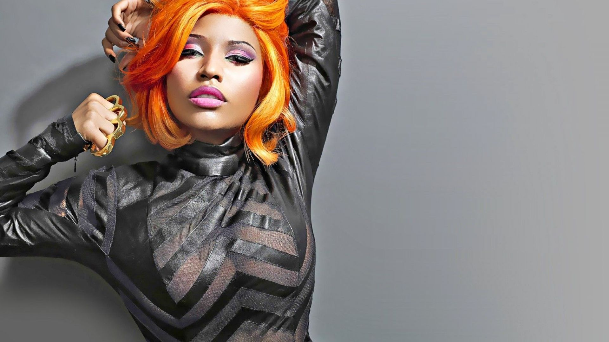
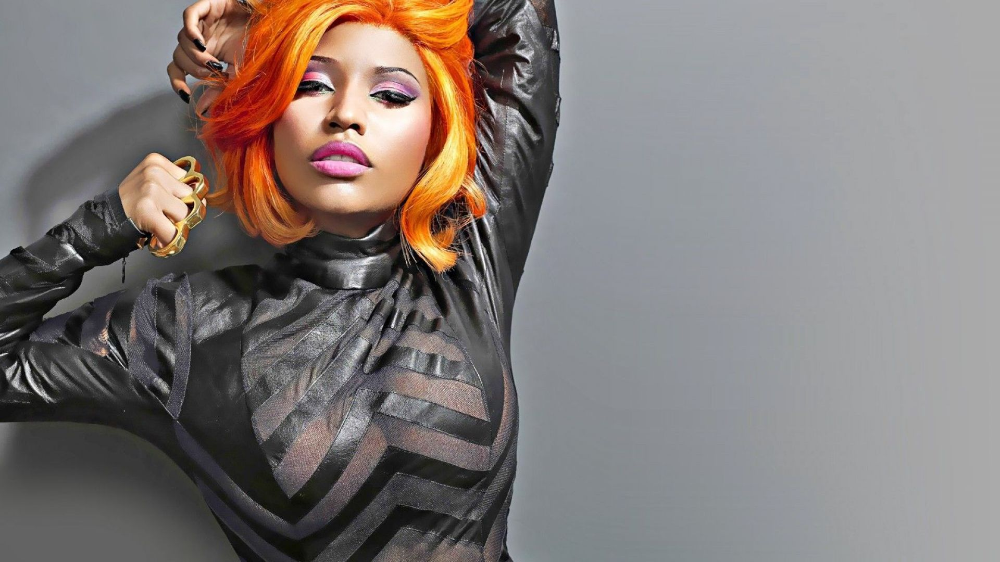

Act I: You Got The Juice Now!
Tupac Shakur, commonly known as 2Pac, was an influential American rapper, actor, and activist. He was born on June 16, 1971, in East Harlem, New York City, and raised primarily in the Bronx. 2Pac rose to prominence in the early 1990s as one of the most prominent figures in West Coast hip-hop, particularly through his affiliation with Death Row Records, headed by Suge Knight. He released his debut album, "2Pacalypse Now," in 1991, which addressed social issues such as racism, violence, and poverty.
Call the cops when you see Tupac, uh Who shot me? But ya punks didn't finish Now ya 'bout to feel the wrath of a menace
Killin' ain't fair but somebody gotta do it
Act II: The Beef
Tupac felt betrayed by Biggie and others in the East Coast hip-hop scene. He believed that Biggie, along with other East Coast rappers, had a hand in orchestrating the 1994 shooting where Tupac was shot multiple times. Tupac interpreted this as a sign of disloyalty and a breach of trust. Tupac's response to what he perceived as betrayal was aggressive and personal. He released diss tracks like "Hit 'Em Up," where he directly attacked Biggie, accusing him of stealing his style, betraying their friendship, and even mocking Biggie's weight and relationship with Faith Evans. Tupac saw these attacks as a way to defend his honor and reputation.
Act III: The Outcome
Tupac Shakur's life came to a tragic end on September 13, 1996, when he was fatally shot in a drive-by shooting in Las Vegas, Nevada. He was just 25 years old at the time of his death. Tupac's murder shocked the hip-hop community and music industry, leaving fans and fellow artists grieving the loss of one of rap's most talented and influential figures.
My .44 make sure all y'all kids don't grow